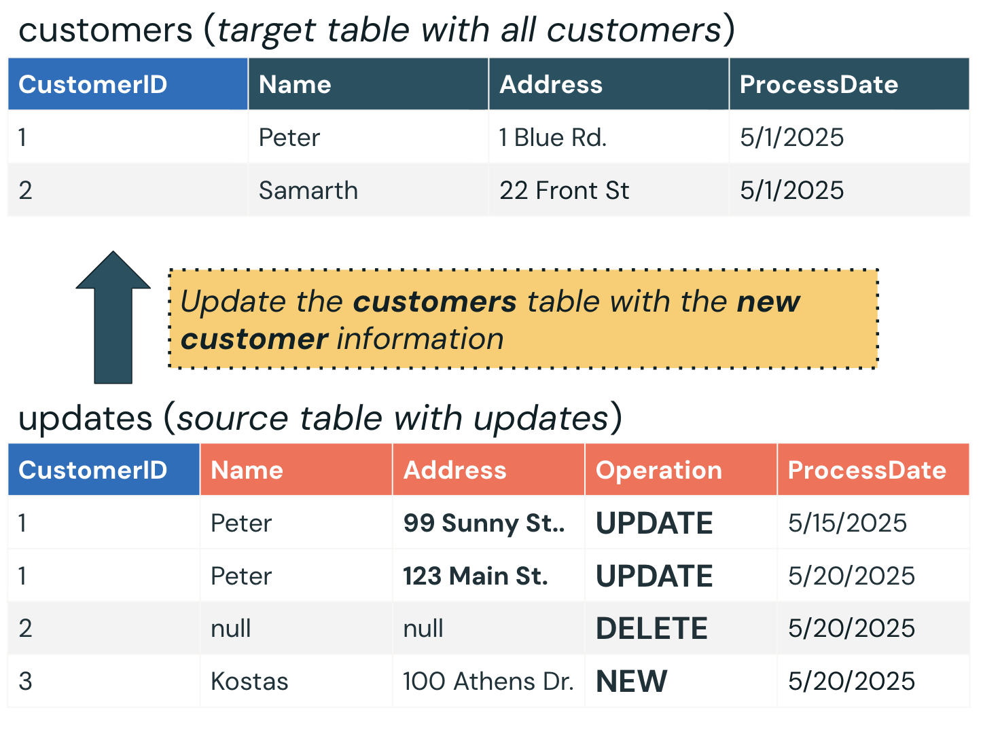

Section 3 · Data Transformation and Modelling · Quelle: Kurs 3, Kapitel 11–12, 14
Quellsysteme wie Datenbanken oder SaaS-Anwendungen ändern sich fortlaufend: Neue Kunden werden angelegt, Adressen aktualisiert, Konten gelöscht. Change Data Capture (CDC) ist die Technik, mit der solche Änderungen nachverfolgt und in eine Zieltabelle im Lakehouse übertragen werden. Dieses Dokument erklärt die Grundidee von CDC, den Unterschied zwischen SCD Type 1 und Type 2, und wie sich CDC mit der deklarativen AUTO CDC INTO-Syntax umsetzen lässt.
CDC bezeichnet die Technik, Änderungen (Inserts, Updates, Deletes) in einer Datenquelle zu erfassen und automatisiert auf eine Zieltabelle anzuwenden, um diese kontinuierlich mit dem aktuellen Stand der Quelle synchron zu halten. Eng damit verbunden ist das Konzept der Slowly Changing Dimensions (SCD), das festlegt, wie historische Änderungen in der Zieltabelle behandelt werden. Zwei Varianten sind besonders verbreitet:
Bei SCD Type 1 wird die Zieltabelle stets mit den aktuellsten Werten überschrieben – es gibt keine Möglichkeit, frühere Zustände eines Datensatzes nachzuvollziehen. Ein Beispiel anhand einer Kundentabelle mit drei eingehenden Änderungen:
ProcessDate).Das Ergebnis ist ein aktueller Schnappschuss aller aktiven Kunden – ohne jede Historie. Das macht SCD Type 1 zur einfachsten CDC-Strategie und ideal für Anwendungsfälle, bei denen ausschließlich der aktuelle, korrekte Datenstand zählt.

Im Gegensatz dazu bewahrt SCD Type 2 jede historische Version eines Datensatzes: Statt eine Zeile zu überschreiben, wird eine neue Version eingefügt und die vorherige über Metadatenspalten (__START_AT/__END_AT) als abgelaufen markiert. Aktive Zeilen tragen ein leeres __END_AT, historische und gelöschte Zeilen ein konkretes Datum. Dieses Muster wird in Kapitel 8 dieser Section vertieft; die vorliegenden Grundlagen fokussieren auf SCD Type 1.
Lakeflow Declarative Pipelines bietet mit AUTO CDC INTO eine kompakte, deklarative Syntax für CDC-Verarbeitung. Sie ersetzt aufwendige, manuell geschriebene MERGE INTO-Logik durch wenige klar lesbare Klauseln. Wichtiger Hinweis: AUTO CDC INTO löst die ältere APPLY CHANGES INTO-API ab – beide verwenden dieselbe Syntax, APPLY CHANGES INTO bleibt aber weiterhin funktionsfähig.
-- Leere Ziel-Streaming-Table anlegen CREATE OR REFRESH STREAMING TABLE scd_type_1_customers_silver; -- CDC-Verarbeitung mit SCD Type 1 (Standardverhalten) CREATE FLOW scd_type_1_flow AS AUTO CDC INTO scd_type_1_customers_silver FROM STREAM customers_bronze_clean KEYS (customer_id) APPLY AS DELETE WHEN operation = 'delete' SEQUENCE BY timestamp COLUMNS * EXCEPT (operation) STORED AS SCD TYPE 1;
Die einzelnen Klauseln im Überblick:
operation übernommen.AUTO CDC INTO übernimmt dabei automatisch mehrere Garantien: inkrementelle/streamende Verarbeitung der CDC-Daten, korrekte Behandlung verspätet eintreffender Datensätze anhand des Sequenzfelds sowie eine einfache Syntax zum Ausschließen von Spalten über EXCEPT.
In einem Beispiel-Kundendatensatz enthielt die erste Datei 939 neue Kunden, die vollständig als Inserts in die leere Zieltabelle übernommen wurden. Eine zweite, nachgelagerte Datei mit 23 Änderungen enthielt 12 Updates, 1 Delete und 10 neue Kunden. Nach der Verarbeitung zeigte die Zieltabelle exakt 939 + 10 − 1 = 948 Zeilen – die 12 Updates wurden direkt an Ort und Stelle überschrieben, ohne dass die vorherigen Werte irgendwo erhalten blieben. Das ist das charakteristische Verhalten von SCD Type 1: Nur der aktuelle Zustand zählt.
AUTO CDC INTO umfasst neben den hier gezeigten Klauseln weitere optionale Elemente: IGNORE NULL UPDATES (NULL-Werte in eingehenden Updates ignorieren statt zu übernehmen), APPLY AS TRUNCATE WHEN (nur für SCD Type 1 unterstützt, zum Verarbeiten vollständiger Tabellen-Truncate-Operationen der Quelle) sowie TRACK HISTORY ON für granulare Steuerung, welche Spalten bei SCD Type 2 historisiert werden. STORED AS SCD TYPE 1 ist der Standardwert und muss daher nicht zwingend explizit angegeben werden.